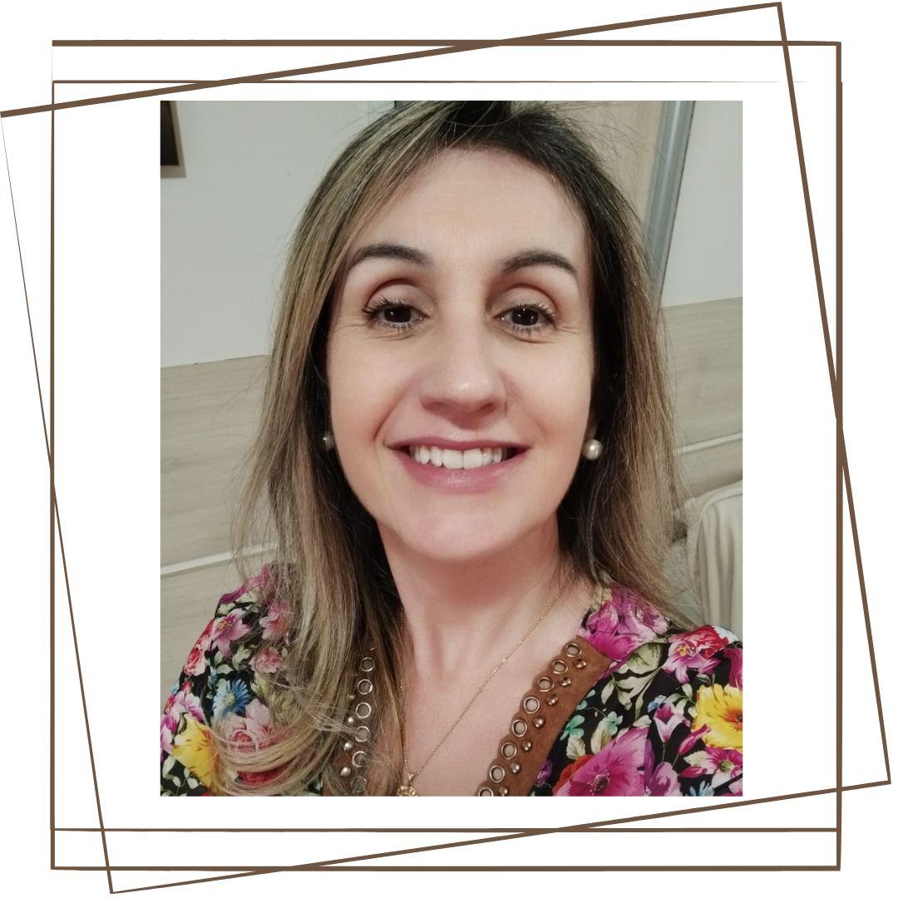

Sílvia Trisch dos Santos Acunha, 55 anos, de Pelotas, Rio Grande do Sul. Mãe da Lídia (amor da minha vida e razão das minhas lutas por um mundo melhor). Filha de Antônio Pedro (já falecido, mas vivo na minha memória e no meu coração, meu exemplo de coragem) e de Sílvia Loi (a mãe mais amorosa que alguém poderia ter). Advogada formada na UFPel e servidora pública há 33 anos. Especialista em Sociologia e Política pela UFPel. Mestre em Propriedade Intelectual e Inovação pelo INPI- RJ. Feminista na prática, desde sempre. Estudando as teorias sobre o tema gênero, no doutorado em Educação da UFPel. Realizando pesquisa voltada para o papel das mulheres nos ambientes de ciência e inovação. Participo do grupo de pesquisa D’Generus: Núcleo de Estudos Feministas e de Gênero, do CNPq. Milito pelos direitos das mulheres e contra todo tipo de violência. Amo dançar, fazer exercícios, viajar, ler, escrever, aprender, ensinar e falar. Tenho fé, e pratico uma religião. Mas, como diz o Papa Francisco: "Quem é da luz não mostra a sua religião, e sim o seu amor". Sou libriana, conciliadora, livre e um pouco teimosa, sigo minha caminhada aprendendo e evoluindo com todos que cruzam meu caminho. Pois, é assim que construímos nossa trajetória aprendendo e ensinando.
Gênero; Inovação; Propriedade Intelectual e Educação.
Lattes: lattes.cnpq.br